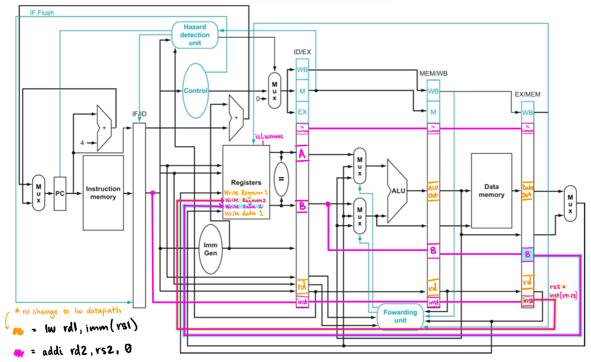

These are some projects I've worked on during my electrical engineering studies.
Common-Emitter Amplifier
Designed a BJT common-emitter amplifier to achieve a minimum gain of 100
and a minimum voltage swing of ±3.5 V
Technologies: BJT circuits, PSpice, oscilloscope
I modeled bias, gain, and swing in PSpice using modified BJT device parameters to ensure the amplifier met the design specifications. Then I built and tested the amplifier in lab by measuring current, voltage, gain, and swing using an oscilloscope and confirmed results matched tolerance calculations.
Pipelined RISC-V Processor

I Collaborated with a team of 4 members to design and implement a five-stage pipelined RISC-V processor.
Technologies: Verilog, RISC-V, digital design
We held weekly design meetings as a team, pair programmed more difficult portions to reduce errors,
and assigned responsibilities evenly among team members through discussion on strengths and workload.
The processor included a five-stage pipeline with both forwarding and hazard detection units to ensure efficient and correct execution of instructions.We also modified the default data path to include a custom instruction (shown in the image above).